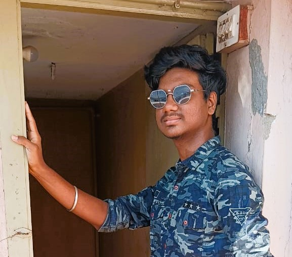

Vinoth kannan S
vinothkannansaravanan@gmail.com
+91 97904 70366
50/1, Krishnapuram 2nd Street, Kamarajar Salai, Madurai - 625009, Tamilnadu, India
Professional Objective
Interested to learn new things and concepts. Aiming to learn new technologies and use them to implement for
real-time projects and ideas. To contribute my best to the working organization.
Academic Record
- Currently pursuing B.Tech(IT) at Velmmal College of Engineering and Technology
- Completed Higher Secondary Education at MRR MAVMM Matric Hr Sec School during 2021 with a mark percentage of 94.46%
- Completed Secondary School Education at MRR MAVMM Matric Hr Sec School during 2019 with a mark percentage of 92.40%
Areas of Interest
- Database Management System
- Web Development
- Cybersecurity
Technical expertise
- Operating Systems : Windows
- Programming Languages : C, Python
- Tools : Codeblocks, Python IDE
Internship
- Winter Internship at Tarcin Robotic Llp for 2 weeks and did a study on Robotics
Certification
- The Joy of Computing using Python - NPTEL
Achievement
- Won 1st prize on Techno Tournament Hackathon – 2023 conducted by Vinsup Infotech(P) Ltd titled Smart City Sustainability Challenge.
Co - Curricular Activities
- Attended the Competitive Programming and Algorithms Workshop conducted by NIT Trichy.
- Actively participated in Coding Contest, an inter college event conducted by Anna University, Madurai Regional Campus.
Languages Known